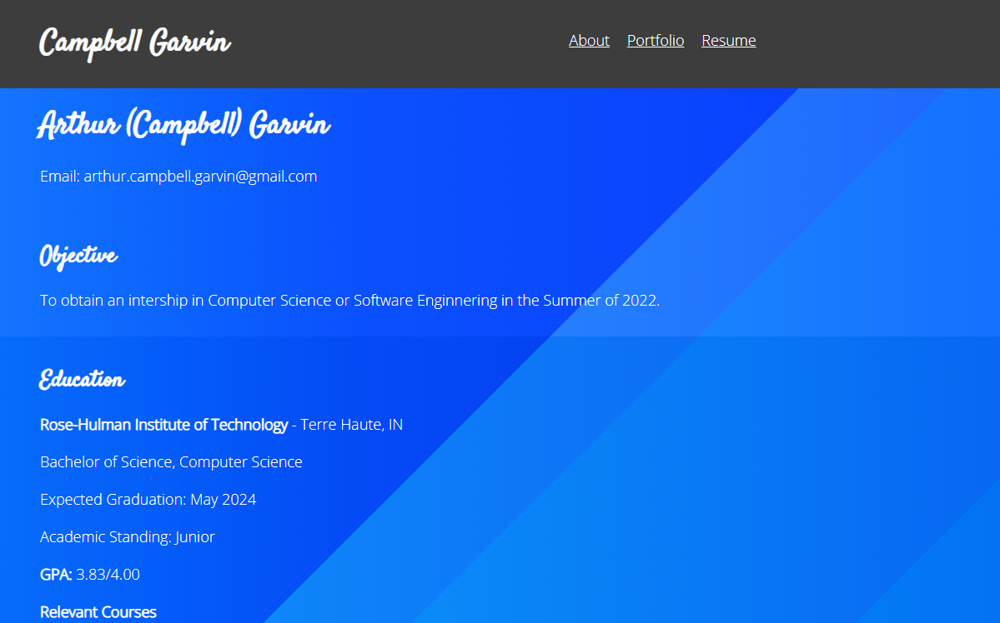

Portfolio
-
Gomoku
In my spare time when I was learning Java, I created an implementation of Gomoku, or Five-in-a-Row. I used Java's built-in classes for drawing and animation to recreate this game. I think this game turned out pretty good and it taught me a lot about the inner workings of Java.
-
Binary Assembly Decoder
The Binary Assembly Decoder is a MIPS-like processor that I created for my Computer Architecture class last year. My largest contribution to the project was I was creating the assembler, which ran in Java and used a HashMap to run in O(n^2) time. Overall, I think this project was a success and it is objectively my coolest project to date.
-
Map Making Software
I created the framework for a map-designing software. Users could place their own nodes and make connections between the points as they saw fit. I plan to redesign it to make it more functional on smaller devices like phones and tablets, and I plan to actually deploy it on the web.
-
Portfolio Website
I used HTML, CSS, and JavaScript to create the website you are reading right now! I designed the website to outline my qualifications in a cohesive and convenient way. Through this project I learned more about website design and deploying websites with Firebase.